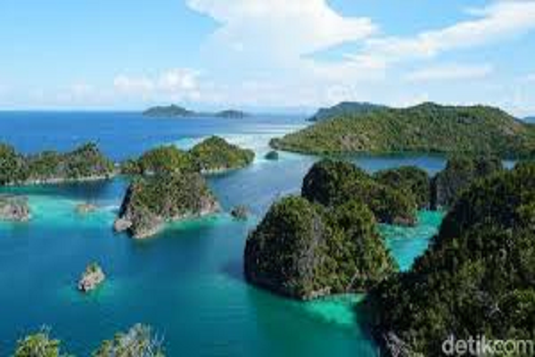
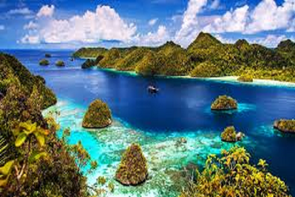

Info Jual Beli di Bogor dan sekitarnya
Lihat Profilku
Danau Kelimutu

Danau Kelimutu adalah tiga danau kawah yang terletak di puncak Gunung Kelimutu, Nusa Tenggara Timur, terkenal dengan fenomena uniknya yang dapat berubah warna. Masing-masing danau memiliki warna yang berbeda, dan warna-warnanya dapat berubah-ubah seiring waktu, memberikan pemandangan yang menakjubkan.
Kawah Putih

Kawah Putih adalah sebuah tempat wisata di Jawa Barat yang terletak di Desa Alam Endah, Kecamatan Rancabali, Kabupaten Bandung, Jawa Barat yang terletak di kaki Gunung Patuha. Kawah putih merupakan sebuah danau yang terbentuk dari letusan Gunung Patuha. Tanah yang bercampur belerang di sekitar kawah ini berwarna putih, lalu warna air yang berada di kawah ini berwarna putih kehijauan, yang unik dari kawah ini adalah airnya kadang berubah warna.